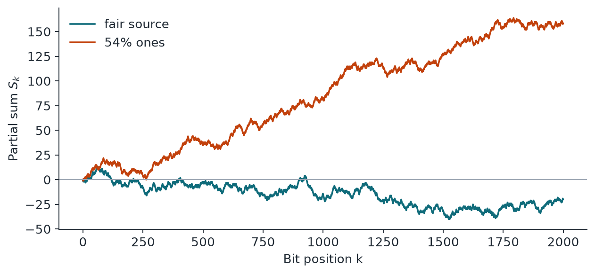

Chapter 4: NIST SP 800-22 (II): Patterns, Complexity and Walks¶
The remaining nine tests of SP 800-22 look for pattern frequencies (two template-matching tests and the serial test), compressibility (Maurer's universal test and the approximate entropy test), the complexity of a block (the linear complexity test) and the behaviour of the random walk made by the bits (cumulative sums and two excursion tests). The chapter ends with the second-level analysis that SP 800-22 prescribes: run many sequences, then test the pile of p-values. That final step is the one most often skipped, and it is where subtle bias can show.
4.1 Non-overlapping template matching test¶
The idea in plain words. Pick a short pattern that cannot overlap itself and count how often it turns up in each of several blocks. Think of counting a rare word across chapters of a book. Too many or too few in any chapter is suspicious. When the pattern is found, the search jumps past it.
Example 4.1: Non-overlapping template matching test
Take 10100100101110010110, \(N = 2\) blocks of \(M = 10\), and template 001. The counts are \(W_1 = 2\) and \(W_2 = 1\). Then \(\mu = 8/8 = 1\) and \(\sigma^2 = 10(1/8 - 5/64) = 0.46875\), so \(\chi^2 = 2.133333\) and \(p = \mathrm{igamc}(1, 1.066667) = 0.344154\).
The mathematics.
- \(m\) is the template length, with 9 or 10 recommended.
- \(M\) is the block length, and \(N\) is the number of blocks, fixed at 8 in the test code.
- \(W_j\) is the hit count in block \(j\).
One p-value comes out per template: up to 148 for \(m = 9\) and up to 284 for \(m = 10\). At \(n = 2^{20}\), \(m = 9\) and \(N = 8\), the standard gives \(\mu = 255.984375\) and \(\sigma^2 \approx 247.5\).
What it catches and misses. It catches patterns that appear too often or too rarely. With 148 templates at \(\alpha = 0.01\), you should expect about 1.5 small p-values on perfect data, so a single low value means little. Patterns outside the template list are invisible.
4.2 Overlapping template matching test¶
The idea in plain words. This is the same counting game, but the template is a run of ones and the search moves forward only one bit after a hit. Because hits can overlap and clump, the count follows a different law from the test above. It is like counting "aa" in "aaaa": that is three matches, not two.
Example 4.2: Overlapping template matching test
The document's illustration uses \(m = 2\), template 11, \(M = 10\) and five blocks, with its own recomputed class probabilities. The blocks 1011101111, 0010110100, 0111001011, 1011111000, 0101101001 give counts 5, 1, 3, 4, 1, so \(v = (0, 2, 0, 1, 1, 1)\). We get \(\chi^2 = 5.051458\) and \(p = 0.409633\). The document counts 2 hits in the second block, which it does not actually contain, and prints \(\chi^2 = 3.167729\) and \(p = 0.274932\). That printed \(p\) does not follow from its own \(\chi^2\) either, since \(\mathrm{igamc}(5/2, 3.167729/2) = 0.6741\).
The mathematics.
- \(v_i\) counts the blocks with exactly \(i\) hits, with \(v_5\) collecting 5 or more.
- The code fixes \(M = 1032\) and \(N = 968\); with \(m = 9\) that gives \(\lambda = 2\) and \(\eta = 1\).
- The count follows a compound Poisson law, and the standard tabulates \(\pi_0\) to \(\pi_5\) as 0.364091, 0.185659, 0.139381, 0.100571, 0.070432 and 0.139865.
At least \(10^6\) bits are expected.
What it catches and misses. It catches too many or too few long runs of ones, which matters for sources that stick. It tests only the single template you choose, so it says nothing about other patterns.
4.3 Maurer's universal statistical test¶
The idea in plain words. If a sequence can be compressed, it is not random. Rather than running a compressor, Maurer's test measures how far back you must look to find the previous copy of each block. In predictable data the same blocks come back soon. It is like noticing that a shop's customers keep returning sooner than they should.
Example 4.3: Maurer's universal statistical test
The string 01011010011101010111 with \(L = 2\), \(Q = 4\) and \(K = 6\) gives distances 3, 6, 2, 1, 1, 4. Their \(\log_2\) values add up to 7.169925, so \(f_n = 1.1949875\). With the document's illustrative values (expected value 1.5374383, variance 1.338) the p-value is 0.767189.
The mathematics.
- \(L\) is the block length, \(Q = 10 \cdot 2^L\) is the number of warm-up blocks, and \(K\) is the number of test blocks.
- \(T_j\) is the position of the last block with the same value \(j\).
- \(f_n\) is the test statistic, the average \(\log_2\) distance back to the previous copy of a block.
- \(E(L)\) is the expected value of \(f_n\) under randomness, and \(\mathrm{var}(L)\) is the variance of a single \(\log_2\) distance, both tabulated below.
- \(c\) is a correction factor that shrinks the spread, because the distances are not independent of each other.
- \(\sigma\) is the resulting standard deviation of \(f_n\).
| \(L\) | Minimum \(n\) | \(Q\) | \(E(L)\) | \(\mathrm{var}(L)\) |
|---|---|---|---|---|
| 6 | 387,840 | 640 | 5.2177052 | 2.954 |
| 7 | 904,960 | 1280 | 6.1962507 | 3.125 |
| 8 | 2,068,480 | 2560 | 7.1836656 | 3.238 |
The standard's table continues up to \(L = 16\).
What it catches and misses. It catches sequences with general statistical structure, in the spirit of compressibility. L'Ecuyer and Simard report that in their experiments this kind of test was much less sensitive than collision tests, with several others usually failing first. It also needs a long input.
4.4 Linear complexity test¶
The idea in plain words. A linear feedback shift register (LFSR) is a tiny machine that makes each new bit by adding some earlier bits together. For each block, we ask for the shortest such machine that could have produced it. Random blocks need a machine about half as long as the block. A much shorter one means the block is too simple.
Example 4.4: Linear complexity test
The document's block 1101011110001 has \(M = 13\) and linear complexity \(L = 4\). Then \(\mu = 6.777222\) and \(T = (-1)^{13}(4 - 6.777222) + 2/9 = 2.999444\). Since that is above 2.5, the block goes in the top class \(v_6\).
The mathematics.
- \(L_i\) is the complexity of block \(i\), found by the Berlekamp-Massey algorithm.
- \(v_0\) to \(v_6\) count \(T_i\) in the classes cut at \(-2.5, -1.5, -0.5, 0.5, 1.5, 2.5\).
- The class probabilities \(\pi_i\) are 0.010417, 0.03125, 0.125, 0.5, 0.25, 0.0625 and 0.020833.
The document asks for \(n \ge 10^6\), \(500 \le M \le 5000\) and \(N \ge 200\).
What it catches and misses. It catches generators whose linear structure fits inside a block. It misses larger ones. Berlekamp-Massey needs about twice the complexity in bits, so a generator with linear complexity near 19,937, like MT19937, cannot be exposed with blocks of at most 5000 bits.
4.5 Serial test¶
The idea in plain words. Every short pattern should turn up about equally often. For \(m = 3\), that means all eight patterns from 000 to 111 should appear in similar numbers. The serial test checks this for all patterns of one length, comparing lengths \(m\), \(m-1\) and \(m-2\) so that the overlaps cancel out. Think of checking that all letter pairs in a code book are evenly used.
Example 4.5: Serial test
Take 0011011101, \(n = 10\) and \(m = 3\), wrapping the first bits round to the end. This gives \(\psi^2_3 = 2.8\), \(\psi^2_2 = 1.2\) and \(\psi^2_1 = 0.4\). So \(\nabla\psi^2_3 = 1.6\) and \(\nabla^2\psi^2_3 = 0.8\), with p-values \(\mathrm{igamc}(2, 0.8) = 0.808792\) and \(\mathrm{igamc}(1, 0.4) = 0.670320\). These match the document's conclusion, although its step 5 prints 0.9057 and 0.8805.
The mathematics.
- \(\nu\) is the count of each overlapping \(m\)-bit pattern, wrapping round the end.
- Choose \(m < \log_2 n - 2\). For \(m = 1\) the test reduces to monobit.
What it catches and misses. It catches any lopsidedness in short patterns, and it can spot sources that favour certain bit combinations. It cannot see patterns longer than \(m\), or dependence between bits far apart.
4.6 Approximate entropy test¶
The idea in plain words. Knowing the last few bits should not help you guess the next one. This test compares how often patterns of length \(m\) and \(m + 1\) appear. If extending a pattern adds little surprise, the data is too regular. It is like asking how much new information each extra letter of a word gives you.
Example 4.6: Approximate entropy test
Take 0100110101 and \(m = 3\). Then \(\phi^{(3)} = -1.643418\) and \(\phi^{(4)} = -1.834372\), so \(\mathrm{ApEn}(3) = 0.190954\). This gives \(\chi^2 = 2 \cdot 10 \cdot (\ln 2 - 0.190954) = 10.043859\) and \(p = \mathrm{igamc}(4, 5.021929) = 0.261961\). The document prints \(\chi^2\) as 0.502193 in this step, which leaves out the factor of 20, but its p-value matches ours.
The mathematics.
- \(\pi_i\) is the share of overlapping windows, wrapping round the end, that hold pattern \(i\).
- \(n\) is the number of bits, and \(m\) should satisfy \(m < \log_2 n - 5\).
What it catches and misses. Small \(\mathrm{ApEn}\) means strong regularity, which it catches well for short-range patterns. As with the serial test, memory longer than \(m\) bits goes unseen.
4.7 Cumulative sums (cusum) test¶
The idea in plain words. Treat each 1 as a step up and each 0 as a step down, and follow the walk. A random walker drifts, but not too far. If the walk strays too far from zero, the ones and zeros are badly mixed. We run it forwards and backwards, so trouble at either end is caught early.
Example 4.7: Cumulative sums (cusum) test
The string 1011010111 gives partial sums 1, 0, 1, 2, 1, 2, 1, 2, 3, 4, so \(z = 4\) and \(p = 0.411659\). On the 100-bit example, the forward maximum is 16 with \(p = 0.219194\), and the reverse maximum is 19 with \(p = 0.114866\).
The mathematics.
- \(\Phi\) is the standard normal distribution function.
- \(k\) runs over the integers from \((-n/z + 1)/4\) to \((n/z - 1)/4\).
- \(k'\) runs over the integers from \((-n/z - 3)/4\) to \((n/z - 1)/4\).
At least 100 bits are recommended.
What it catches and misses. It catches too many ones or zeros in the early part (forward) or late part (backward) of the sequence, and it spots sequences that are too evenly mixed, since very small \(z\) also stands out. It sees only the single largest excursion, so fine structure in the walk is lost.

4.8 Random excursions test¶
The idea in plain words. Split the walk into cycles, each one a trip that leaves zero and comes back. On each trip, count how many times the walker visits a given level, such as \(+1\) or \(-3\). The test is really eight small tests, one for each of the levels \(-4\) to \(-1\) and \(+1\) to \(+4\).
Example 4.8: Random excursions test
The string 0110110101 gives \(S' = 0, -1, 0, 1, 0, 1, 2, 1, 2, 1, 2, 0\), so \(J = 3\) cycles. For level \(x = 1\) the counts are \(\nu = (1, 1, 0, 1, 0, 0)\). Using the document's rounded probabilities, \(\chi^2 = 4.333033\) and \(p = 0.502529\). The document's own run on \(10^6\) bits of \(e\) has one state, \(x = -1\), at 0.007779, and it notes that such contradictions call for testing more sequences.
The mathematics.
- \(J\) is the number of cycles, and \(\nu_k(x)\) counts the cycles visiting level \(x\) exactly \(k\) times, with \(k = 5\) meaning 5 or more.
- The \(\pi_k\) formula is for \(k = 1\) to \(4\).
The test stops if \(J < 500\), and the technical section states the rule as \(\max(0.005\sqrt{n}, 500)\). At least \(10^6\) bits are recommended.
What it catches and misses. It catches walks that visit levels in odd proportions. It can be skipped outright when a sequence has too few cycles, and eight p-values per sequence give more chances for a low value by luck alone.
4.9 Random excursions variant test¶
The idea in plain words. Rather than looking cycle by cycle, this variant simply adds up the total number of visits to each level over the whole walk. It covers 18 levels, from \(-9\) to \(+9\) without zero. On average a level gets one visit per cycle, so the total should be close to \(J\).
Example 4.9: Random excursions variant test
With the same walk, \(J = 3\), and level \(x = 1\) is visited \(\xi = 4\) times. So \(p = \mathrm{erfc}\big(1/\sqrt{2 \cdot 3 \cdot 2}\big) = 0.683091\).
The mathematics.
- \(\xi(x)\) is the total number of visits to level \(x\) across all \(J\) cycles.
- The variance \(4\lvert x \rvert - 2\) per cycle comes from the visit distribution given above.
The standard's run on \(10^6\) bits of \(e\) has \(J = 1490\), with all 18 p-values above 0.01.
What it catches and misses. It catches levels visited too often or too rarely over the whole walk. It works from totals alone, so it cannot see how the visits are shared between cycles, and it shares the excursions test's need for enough cycles.
4.10 Second-level analysis¶
The idea in plain words. One sequence with one p-value tells you little. So we run many sequences and ask two questions about the pile of results. Did about the right share pass? And are the p-values spread evenly from 0 to 1, as they should be? A generator can pass every individual test and still fail here, the way a tutor might get suspicious when every pupil's mark is exactly 70.
Example 4.10: Second-level analysis
With 1000 sequences at \(\alpha = 0.01\), the interval is \(0.99 \pm 3\sqrt{0.99 \cdot 0.01/1000} = 0.99 \pm 0.0094392\), so the proportion should be above 0.9805607. If 996 pass, the proportion 0.9960 is fine. For uniformity, 100 p-values falling in ten bins as 12, 9, 11, 8, 10, 13, 7, 10, 9, 11 give \(\chi^2 = 3.0\) and \(P_T = 0.964295\).
The mathematics.
- \(m\) is the number of sequences.
- \(F_i\) is the count of p-values in sub-interval \(i\), and \(s\) is the number of p-values.
- The p-values count as uniform if \(P_T \ge 0.0001\), and at least 55 sequences are needed.
If a result fails, NIST asks for more samples to decide between a statistical accident and real non-randomness.
What it catches and misses. It catches subtle bias that is too small to fail any one sequence. The interval is a normal approximation, reasonable for large samples, and neither check explains what is wrong, only that something is. The tests also overlap, so many p-values from one run are not independent evidence.
4.11 Summary¶
- Template tests count how often a chosen pattern appears. With 148 templates at \(\alpha=0.01\) you expect about 1.5 small p-values on perfect data, so one low value means little.
- Maurer's test and approximate entropy measure compressibility in different ways; the serial test checks that all short patterns are equally common; the linear complexity test finds the shortest shift register for each block.
- The cusum and excursion tests follow the walk of the bits. Cusum catches a walk that strays too far or stays too close to zero; the excursion tests need enough cycles and give many p-values per sequence.
- The second-level analysis checks the proportion of sequences that pass and the uniformity of their p-values. A generator can pass every individual test and still fail here.
- Berlekamp-Massey needs about twice the linear complexity in bits, so blocks of at most 5000 bits cannot expose a generator such as MT19937, whose linear complexity is 19,937.
4.12 Exercises¶
-
Run the cumulative sums test (forward) on 1100100101. Give the partial sums, \(z\) and the p-value.
Answer
Treating 1 as \(+1\) and 0 as \(-1\), the partial sums are 1, 2, 1, 0, 1, 0, \(-1\), 0, \(-1\), 0. The largest absolute value is \(z=2\). With \(n=10\) the formula gives \(p=0.942\). The walk stays unusually close to zero, which is not suspicious on a string this short.
-
For \(n=10^6\) bits, what is the largest block length \(m\) allowed for the serial test and for the approximate entropy test?
Answer
The serial test needs \(m<\log_2 n-2=17.93\), so \(m\le17\). The approximate entropy test needs \(m<\log_2 n-5=14.93\), so \(m\le14\).
-
A second-level analysis uses 500 sequences at \(\alpha=0.01\). What is the lowest proportion of passing sequences that is acceptable?
Answer
The interval is \(0.99\pm3\sqrt{0.99\cdot0.01/500}=0.99\pm0.0134\), so the proportion must be at least \(0.9767\), which means at least 489 of the 500 sequences must pass.
-
Roughly how many bits does Berlekamp-Massey need to expose a linear generator whose linear complexity is 19,937? Why does the linear complexity test with blocks of 5000 bits miss it?
Answer
It needs about twice the linear complexity, so roughly \(2\times19{,}937\approx39{,}900\) bits. A block of at most 5000 bits is far shorter than that, so within each block the generator looks like a random string of complexity about half the block length, and the block is not flagged.
-
Why is it not enough to check that each individual SP 800-22 p-value is above 0.01? Describe the two checks of the second-level analysis.
Answer
On a perfect source about 1% of p-values fall below 0.01 by chance, and a defect too small to fail any single sequence can still bend the whole collection of p-values. The two checks are: (1) the proportion of sequences that pass must lie inside a confidence interval around \(1-\alpha\); (2) the p-values must be uniformly spread over \([0,1)\), tested by a chi-square on ten bins whose p-value \(P_T\) must be at least 0.0001.